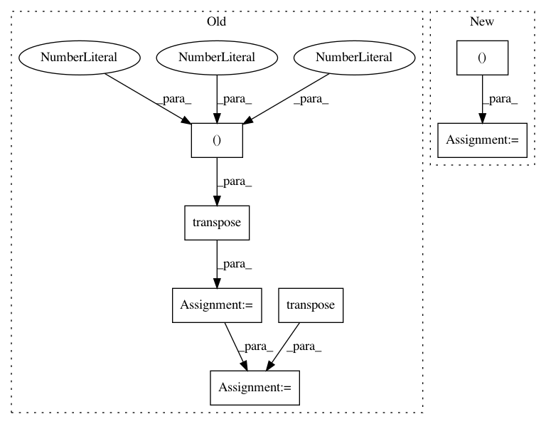

b82419f321b3b52841065e00d1f50945d7e8a2ee,nussl/separation/primitive/hpss.py,HPSS,run,#HPSS#,48
Before Change
// make a new audio signal for the background
// make a mask and return
harmonic_mask = np.array(harmonic_masks).transpose((1, 2, 0))
percussive_mask = np.array(percussive_masks).transpose((1, 2, 0))
both_masks = [harmonic_mask, percussive_mask]
self.masks = []
for mask in both_masks:
if self.mask_type == self.BINARY_MASK:
mask = np.round(mask)
mask_object = masks.BinaryMask(mask)
elif self.mask_type == self.SOFT_MASK:
mask_object = masks.SoftMask(mask)
else:
raise ValueError("Unknown mask type {self.mask_type}!")
self.masks.append(mask_object)
self.result_masks = self.masks
return self.masks
def _compute_spectrograms(self):
After Change
for i in range(_masks.shape[-1]):
mask_data = _masks[..., i]
if self.mask_type == self.MASKS["binary"]:
mask_data = _masks[..., i] == np.max(_masks, axis=-1)
mask = self.mask_type(mask_data)
self.result_masks.append(mask)
return self.result_masks
In pattern: SUPERPATTERN
Frequency: 4
Non-data size: 7
Instances
Project Name: interactiveaudiolab/nussl
Commit Name: b82419f321b3b52841065e00d1f50945d7e8a2ee
Time: 2020-03-16
Author: prem@u.northwestern.edu
File Name: nussl/separation/primitive/hpss.py
Class Name: HPSS
Method Name: run
Project Name: geomstats/geomstats
Commit Name: 17b593b980001745a6b6a199166f091897f6188d
Time: 2018-05-08
Author: ninamio78@gmail.com
File Name: geomstats/spd_matrices_space.py
Class Name:
Method Name: is_symmetric
Project Name: geomstats/geomstats
Commit Name: b0d0053b1f1738640fc99fba642c83af42d10b22
Time: 2018-02-02
Author: ninamio78@gmail.com
File Name: geomstats/special_euclidean_group.py
Class Name: SpecialEuclideanGroup
Method Name: group_log_from_identity
Project Name: deepchem/deepchem
Commit Name: c96af58e6ab2f85626e51a331e8479da49329f0e
Time: 2017-01-18
Author: joegomes@stanford.edu
File Name: deepchem/models/tensorflow_models/__init__.py
Class Name: TensorflowClassifier
Method Name: predict_proba_on_batch